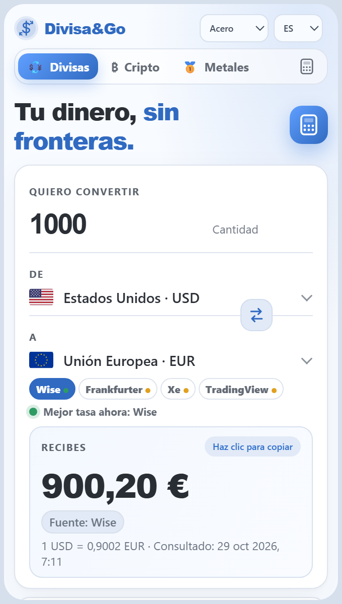
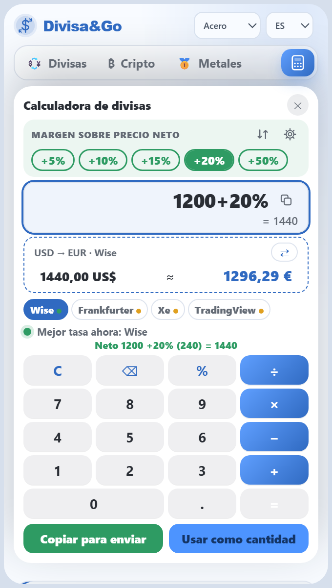
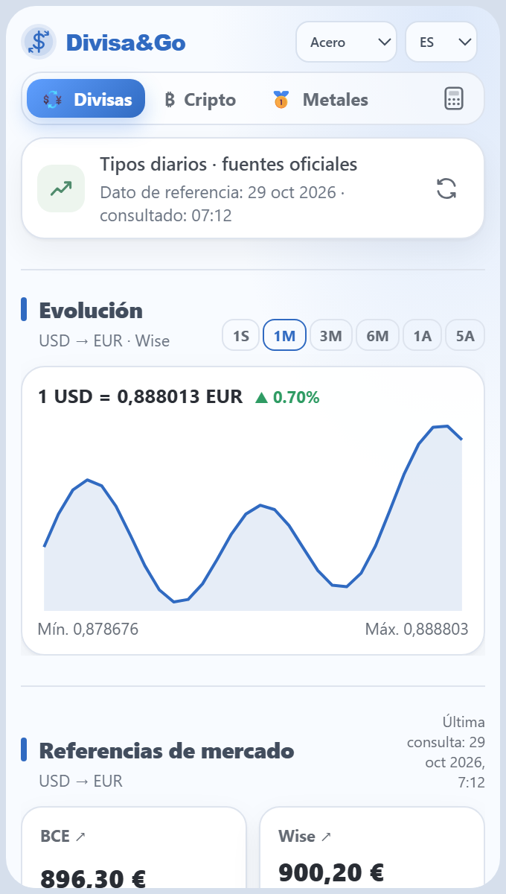
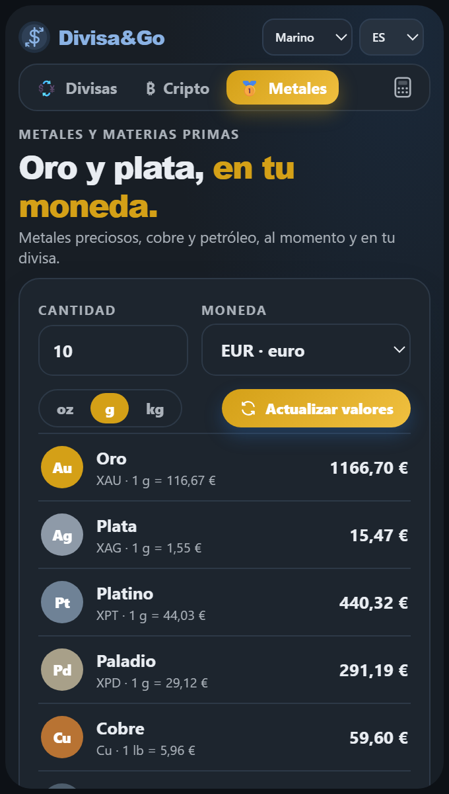
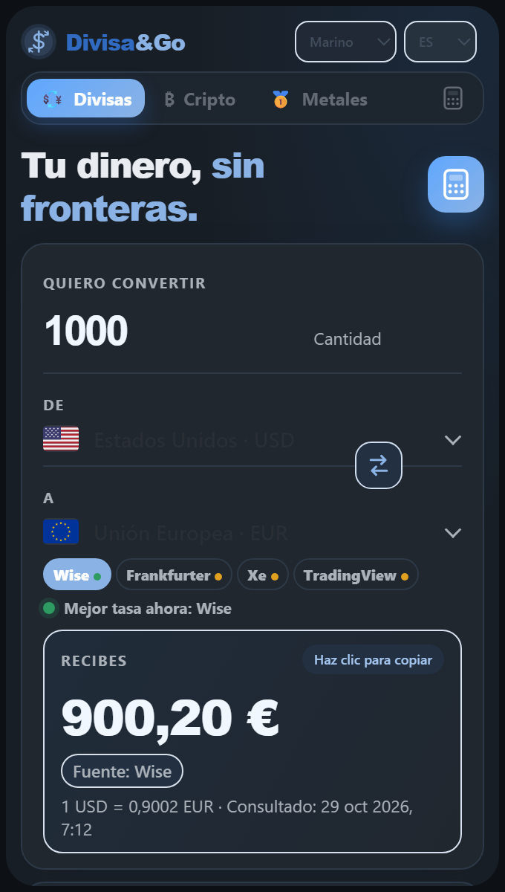
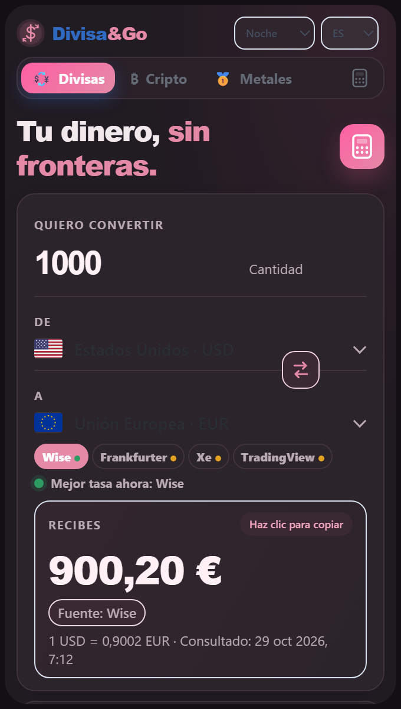

Extensión para Chrome · App para WindowsChrome extension · Windows app
Convierte más de 150 divisas, calcula el precio final con tu margen y comprueba de un vistazo qué fuente da la mejor tasa. Sin cuentas, sin anuncios de terceros y con tus datos en tu equipo.Convert 150+ currencies, work out the final price with your margin and see at a glance which source gives the best rate. No accounts, no third-party ads, and your data stays on your device.


01 · Calculadora01 · Calculator
Pensada para quien añade un margen a un precio neto. Y al revés: si ya tienes el precio final, te dice qué margen te queda.Built for anyone who adds a margin to a net price. And the other way round: if you already have the final price, it tells you the margin you are left with.
02 · Fuentes02 · Sources
Elige de dónde sale la tasa y todo el cálculo —conversión, calculadora y gráfico— la usa. Un semáforo te dice si hay una mejor.Choose where the rate comes from and everything — conversion, calculator and chart — uses it. A traffic light tells you whether a better one exists.

03 · Más allá de las divisas03 · Beyond currencies
Los precios del día en tu moneda, por gramo, onza o kilo. Cada valor se contrasta con una segunda fuente y, si no coinciden, te lo avisa.Today’s prices in your currency, per gram, ounce or kilo. Each value is checked against a second source and flagged if they disagree.

04 · A tu gusto04 · Your way


RecorridoWalkthrough
Una conversión, el gráfico y la comparación de fuentes. La demo corresponde a una versión anterior de la interfaz.A conversion, the chart and the source comparison. The demo shows an earlier version of the interface.
Windows
La misma Divisa&Go en su propia ventana, con una chincheta para mantenerla siempre visible.The same Divisa&Go in its own window, with a pin to keep it always on top.
Versión 1.0.0 · 104 MB · Windows 10 y 11 (64 bits) · GratisVersion 1.0.0 · 104 MB · Windows 10 and 11 (64-bit) · Free
El instalador aún no tiene firma digital de pago, así que Windows SmartScreen puede decir «Windows protegió su PC». Pulsa Más información y después Ejecutar de todas formas. Para comprobar que el archivo es el original, compara su huella SHA-256 con esta: d9cf2656a3cbbd0b3e890c59e7b44fee7adddb8db97d1aa43215592153ca9961The installer does not yet carry a paid digital signature, so Windows SmartScreen may say “Windows protected your PC”. Click More info and then Run anyway. To check the file is the original, compare its SHA-256 fingerprint with this one: d9cf2656a3cbbd0b3e890c59e7b44fee7adddb8db97d1aa43215592153ca9961
Conversión de más de 150 divisas, calculadora, gráficos de evolución, comparación de fuentes, cripto, temas, 6 idiomas y copia de seguridad de favoritos. Tus datos se guardan solo en tu equipo.Conversion of 150+ currencies, calculator, trend charts, source comparison, crypto, themes, 6 languages and favorites backup. Your data is stored only on your computer.
La extensión se instala desde la Chrome Web Store. Si buscas ayuda o tienes una idea, escríbenos desde la página de soporte.The extension installs from the Chrome Web Store. If you need help or have an idea, write to us from the support page.
PrivacidadPrivacy
No hay registro, analítica ni seguimiento propio. Tus favoritos, márgenes y ajustes viven en tu navegador.No sign-up, analytics or tracking of our own. Your favorites, margins and settings live in your browser.
A las fuentes se les pide el par o el producto. Nunca el importe que escribes ni tus márgenes.Sources are asked for the pair or product. Never the amount you type or your margins.
Una copia automática al día, dentro del navegador, que puedes restaurar o exportar cuando quieras.One automatic backup a day, inside your browser, that you can restore or export whenever you like.
Leer la política de privacidad completaRead the full privacy policy
LicenciaLicense
Divisa&Go se puede usar libremente, también en el trabajo. Solo las organizaciones en las que la usan más de 50 personas necesitan una licencia corporativa.Divisa&Go can be used freely, at work too. Only organizations where more than 50 people use it need a corporate license.
Personas y equiposPeople and teams
GratisFree
Uso personal y profesional, en empresas y organizaciones de hasta 50 personas. Sin registro ni caducidad.Personal and professional use, in companies and organizations of up to 50 people. No sign-up, no expiry.
EmpezarGet startedMás de 50 personasMore than 50 people
Licencia corporativaCorporate license
Obligatoria cuando más de 50 personas de una organización usan la aplicación. Escríbenos y la preparamos.Mandatory when more than 50 people in an organization use the app. Write to us and we will set it up.
Solicitar licenciaRequest a licenseLeer el texto completo de la licenciaRead the full license text